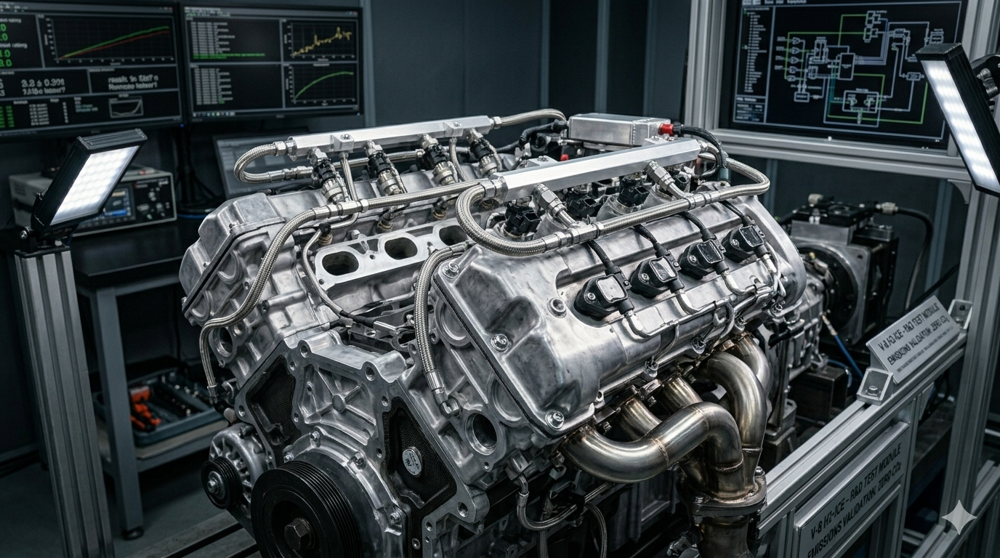
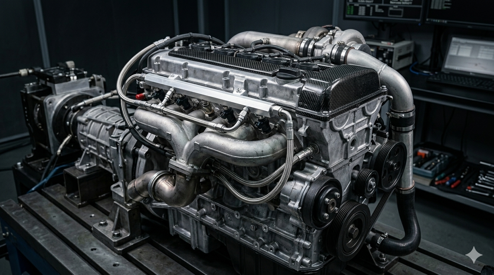

Diferente dos veículos elétricos, o motor a combustâo de hidrogênio mantém a mecânica tradicional das pistas, mas com emissão zero de CO2.

Preserva o bloco tradicional com pistões, bielas e virabrequim, mantendo o ronco e a dinâmica dos motores de alta performance
O hidrogênio gasoso é injetado direto na câmara de combustão no momento exato da faísca, eliminando o risco de pré-detonação (backfire) nas válvulas
O motor opera com grande excesso de ar hraças á alta velocidade de queima de gás, reduzindo a temperatura interna e minimizando a formação de óxidos de nitrogênio (NO2)
Componentes críticos como o cabeçote utilizam ligas metálicas especiais e arrefecimento de alta vazão ára suportar a rápida liberação de energia do combustível
